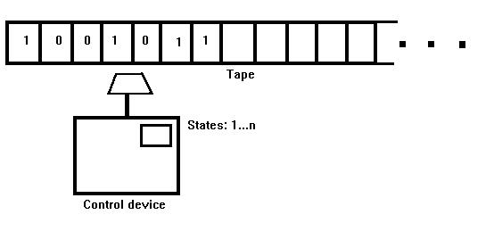

Click here for an Applet that simulates Turing Machine.
Both areas require a formal definition of the concepts:
f: {0,1}^* -> {0,1}^*
({0,1}^* is the set of
all finite strings (or words) containing only 0s and 1s.
It is only necessary to consider such functions as have range {0,1}. These are known as Decision Problems.
Hence the question
f : N -> {0,1}
That is `problems' of the form
Input: n a natural number
Output: 1 if n satisfies some property; 0 if n does not satisfy it.
Examples:
Why should one take this as evidence that NO PROGRAM (ALGORITHM) AT ALL exists for the problem?
In other words
How can it be argued that results on computability apply to all types of computer? (Past, Present, and Future)
The answer is that such results are proved with respect to abstract models of computation that capture all the essential elements of a typical computer. A `typical computer' has
This is not an unrealistic assumption: we do not want to classify a problem as unsolvable just because on some real machines there may not be enough memory available.
The first abstract model of computation was defined by Alan Turing in 1936. This had:
The Church-Turing Hypothesis
The importance of the Church-Turing hypothesis is that it allows us,
without any loss of generality, to consider computability results solely
with respect to some specific computer language.
Suppose P is some decision problem.
The Church-Turing hypothesis asserts
In 1935, Alan Turing devised a theoretical gadget [which is also a model for a primitive computer] that he believed could settle the famous Hilbert Decision Problem. The Hilbert Decision Problem queries whether there exists an effective procedure for determining in advance if a certain conclusion follows logically from a given set of assumptions. This interesting problem was only hampered in Turing’s mind by the notion of an "effective procedure," or computation, which after thousands of years of use still had no clear cut definition. So Turing designed an imagined machine which utilizes an algorithm to carry out a computation.
This Turing Machine (TM) as it is called is composed of an infinitely long tape of ruled off squar4s that can each contain one of a finite set of symbols [in the simplest case: 1 and 0], and a scanning head that can write read and erase symbols of these squares. The algorithm for this machine is in all intents and purposes the program: the set of instructions that tells the machine what to do.
So how does this machine work?
First the data [the tape with a string of 1’s and 0’s] is fed into the Machine and then the Machine reacts to the data as the program calls. An example of a set of instructions by which such a machine is governed is as follows: 1. Go right one square. 2. Go to step 1 if the current square contains a 1. 3. Print 1 on the current square. 4. Go left one square. 5. Go to step 4 if the current square contains a 1. 6. Print 1 on the current square. 7. Stop. This program changes the zeroes at the end of a string of 1’s into 1’s. This program can either be imbedded permanently into the machine, so this machine can only perform these instructions or the instructions themselves can be fed into the machine on a tape so that the machine can perform any set of steps. This machine that can perform any set of steps is called a Universal Turning Machine (UTM)..
What can this machine compute?
An integer n can be computed is there is a TM that can produce it. So a number is computable if there is such a TM that will stop after printing n number of 1’s on an input tape of zeroes. Other real numbers can also be computed simply by printing a string of 1’s that represents each digit of the real number. Even irrational numbers are computable in this sense but the program will run on forever. But Turing says that these computable numbers constitute a small part of the set of all numbers and for the most part the great percentage of numbers are not computable.
So what is this Halting Problem?
The Halting Problem asks if there is a program that accepts a program P and input data I that after a finite number of steps halts, at which point the final configuration of the tape tells whether the program P will stop after a finite number of steps of processing data I. The Halting Theorem a la Turing states that no such program exists. And furthermore any thing that is computable can be computed by a suitable TM. A formal system is a system which is composed of abstract symbols. These symbols have no intrinsic meaning (such as words have a meaning in a sentence) other than the meaning the framework within which they are created gives to them (the sentence is either true or false, i.e. provable or unprovable). This framework of symbols is called a formal system. In this formal system a string of symbols may or may not constitute a theorem. A string is a theorem if and only if the string can be deduced from the set of axioms which defines the formal system. The formal system is equivalent to a TM.
What are the implications?
A formal system of arithmetic, per Hilbert, is finitely describable, consistent, complete [i.e., every mathematical truth translates to a theorem and every theorem translates to a mathematical truth], and sufficiently powerful enough to represent all statements that can be made about the natural numbers.
Hilbert believed that the system was formalizable, that is to say, that there is a finite procedure for deciding the truth or falsity of a statement. Goedel said that arithmetic is not formalizable. He also noted that formalized systems are ones that for which we have created a mathematical framework within which to speak about whatever it is we wanted to formalize. The formal system is a mathematical object itself. Goedel goes on to say that there may be a formal system powerful enough to represent arithmetic but that there exists truths that are not provable within that system. So this is the same as the Halting theorem in that there are statement sin arithmetic that cannot be proven or disproven just as there is no TM that will determine whether a program with input data will ever halt. So there is no Turing Machine that can print out the true statements of arithmetic. Truth is bigger than truth. This led Turing to embark on the quest to determine if a machine can or ever be able to think. His view was that if the machine appeared to think then it does think.

| Present State | Present Symbol | Write | Move | New State |
| 1 | 0 | 0 | Right | 2 |
| 2 | 0 | 0 | Right | 3 |
| 2 | 1 | 1 | Right | 2 |
| 3 | 0 | Blank | Left | 5 |
| 3 | 1 | 0 | Left | 4 |
| 4 | 0 | 1 | Right | 2 |
| Number (In Unary) | Machine State | Movement |
| 01101110 | 1 | Write a Zero, Go to state two |
| 01101110 | 2 | Scan past 1's |
| 01101110 | 2 | End of first string, go to next |
| 01101110 | 3 | Change 1 to 0, go back. |
| 01110110 | 4 | Copy the 1, return to second string. |
| 01110110 | 2 | End of first string, go to next. |
| 01110110 | 3 | Change 1 to 0, go back. |
| 01110010 | 4 | Copy the 1, return to second string. |
| 01111010 | 2 | End of first string, go to next. |
| 01111010 | 3 | Change 1 to 0, go back. |
| 01111010 | 4 | Copy the 1, return to second string. |
| 01111100 | 3 | No second string. Erase last 0. |
| 0111110 | 5 | Halt--no further move possible. |

Click
here for an Applet that simulates Turing Machine.